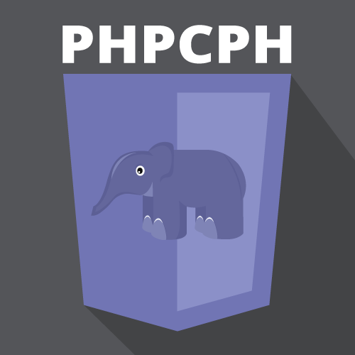
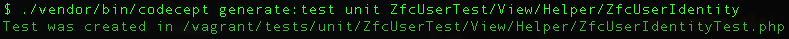
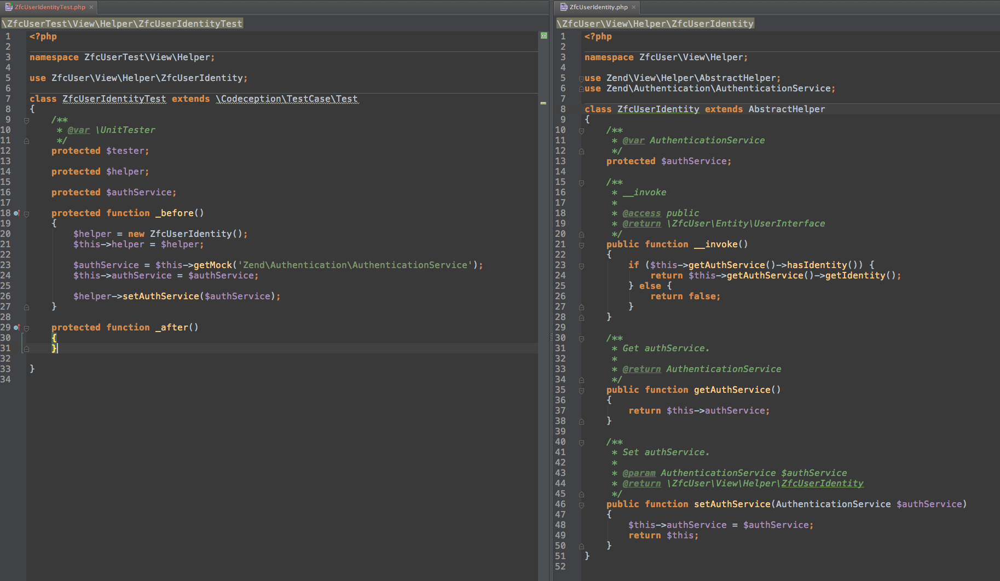
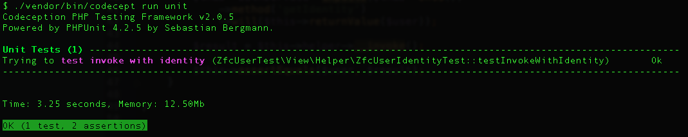

CopenhagenPHP
Automated testing with Codeception
By Daniel Strøm / @MrStroem
ME! ME! ME!
- PHP-developer for 10 years, pro for 5
- Owner of Eye4web
- Zend Framework 2 contributor
- ZF-Commons maintainer
- Not a testing-expert, but daily user
Find me
IRC: Freenode#zftalk|#codeception
Email: ds@eye4web.dk
Twitter: @MrStroem
What will happen
Test a ZF2 application
- Why test
- Test types
- Codeception
- TESTS!
- Live-example(yes, i dare)
Why test?
Why test?
- For your future self
http://xkcd.com/1421/
Why test?
- Does the code work as expected?
- Does new code work?
- Forces better design
- Serves as documentation
Test types
- Acceptance
- Integration
- Functional
- Load
- Security
- Unit
- More...
Test types
- Acceptance
- Integration
- Functional
- Load
- Security
- Unit
- More...
Acceptancetests
- Tests if application meets requirements
- Tests the whole application flow
- Tests the "output"
- Easy to write
- Can be written by anyone
- Slow
Functionaltests
- Does the application work?
- Sets application in a known state
- Written by developers
- Faster than acceptancetests
Unittests
- Isolated
- Tests small units of code
- Written by developers
- Show where errors happen
- Takes time == expensive
- Very fast!
Codeception
- Created by Michael Bodnarchuk @davert
- Started 2011, stable release jan 2012
- Open-source, MIT licensed
- One tool to run all 3 tests
- Inspired by BDD
Codeception
- Can test all PHP code
- Tests written in PHP
- More flexible, can use CSS selectors
- Ideal for frameworks
- Modules which integrates with frameworks
ZF2 skeleton + ZfcUser
ZF2 skeleton + ZfcUser
ZF2 skeleton + ZfcUser
Installation
- phar
- git
- composer
Installation
composer
{
"name": "zendframework/skeleton-application",
"description": "Skeleton Application for ZF2",
"license": "BSD-3-Clause",
"keywords": [
"framework",
"zf2"
],
"homepage": "http://framework.zend.com/",
"require": {
"php": ">=5.3.3",
"zendframework/zendframework": "2.3.*",
"zf-commons/zfc-user": "1.*"
},
"require-dev": {
"codeception/codeception": "~2.0.0"
}
}
run "composer update"
Installation
composer

Installation
composer

Installation
composer
Run "./vendor/bin/codecept bootstrap"
Unittests
Generate unittest
Unittests
Unittests
Unittests
Unittests
Unittests
Unittests
Unittests
Unittests
Unittests
Unittests
Acceptancetests
Acceptancetests
Acceptancetests
Acceptancetests

Acceptancetests
Acceptancetests
Acceptancetests
Acceptancetests
Acceptancetests

Acceptancetests
Functionaltests
Functionaltests
Functionaltests
Functionaltests
Functionaltests
Live demo


Thank you
Rate talk: https://joind.in/11828